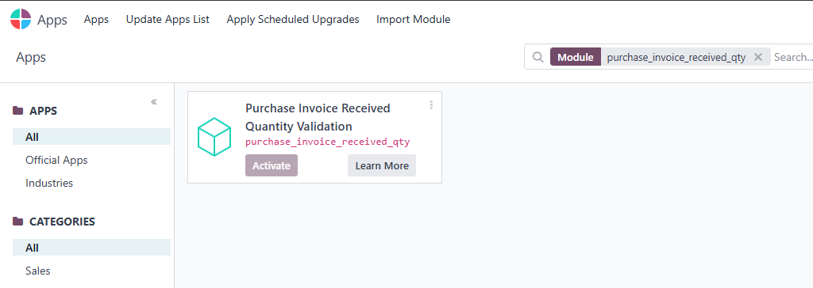
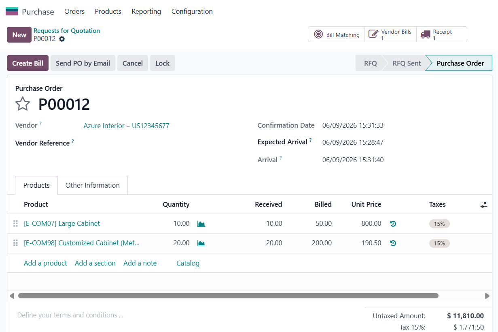
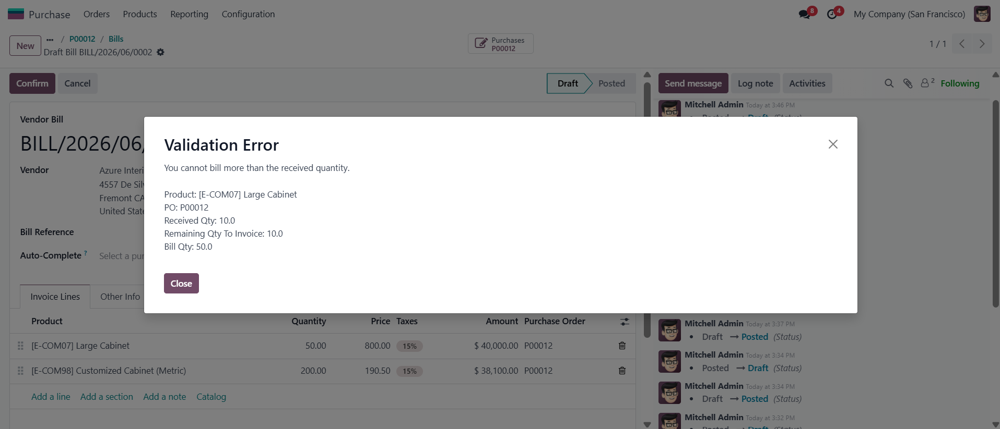

This Odoo module prevents users from billing quantities greater than the received quantities for purchase orders using 3-way matching (Based on received quantities).
The validation is applied on vendor bills linked to purchase order lines to ensure invoice quantities never exceed the quantities received in stock operations.
When a user posts a vendor bill for a purchase order configured with 3-way matching, Odoo will validate that the billed quantity does not exceed the received quantity.
If the billed quantity is greater than the received quantity, the system will raise a validation error and prevent the action.
Install the module from the Apps menu.

Example of a purchase order using received quantity validation.

The system prevents vendor bills with quantities greater than the received quantity.

Siti Mayna
https://github.com/stmayna